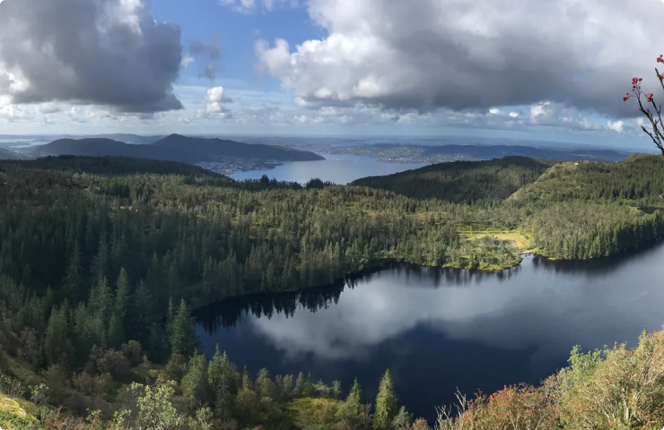
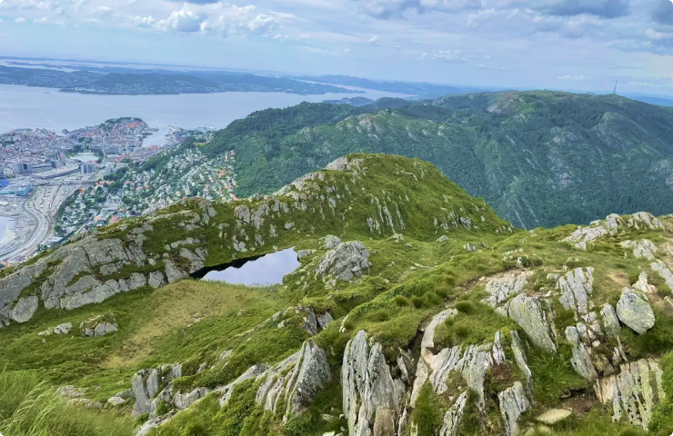

Hikes near Bergen

Fløyen
Length: 10.2 km - Est. 5 h
Fløibanen is one of Norway's most visited attractions. At the top of Fløyen you will find a large and varied hiking area, spectacular views of the city.
Learn More
Ulriken
Length: 3.5 km - Est. 2 h 30 m
Ulriken is the highest of the Seven Mountains that surround the city of Bergen, Norway. It has a height of 643 meters (2,110 ft) above sea level.
Learn More

Landåsfjellet
Length: 3.5 km - Est. 2 h 30 m
Landåsfjellet is a lower plateau south of Ulriken/Haugavarden which offers numerous trails, and is almost a separate hiking region by its own.
Learn More